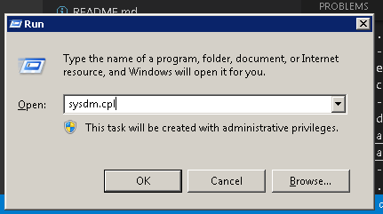
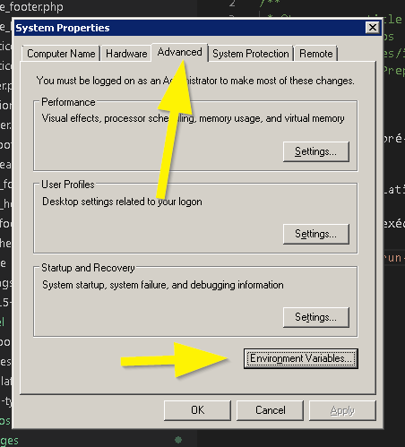
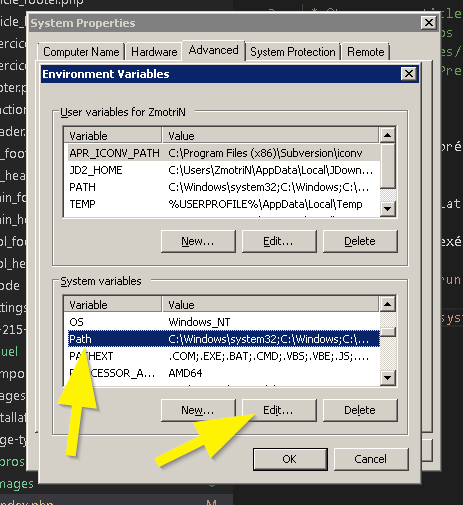
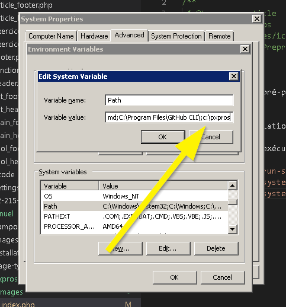

PXPros est un pré-processeur qui permet d'amener toute la puissance de PHP à un projet HTML statique. Il peut être utilisé pour créer des rendus de dossiers complets ou encore être utilisé en temps réel un peu comme SASS.
PXPros est un exécutable statique, il n'a besoin d'aucune dépendance. Il suffit de le placer dans dossier qui est dans les paths d'environnement ou encore ajouté son dossier dans les paths. Pour ce faire, pesez sur WIN+R et ensuite exécutez la commande sysdm.cpl
   PXPros se configure par projet. Il suffit de créer un fichier JSON (_pxpros.json) à la racine du projet.
Exemple:
data
La propriété data est un objet où vous pouvez y mettre tout ce que vous voulez. Ces données seront accessibles via la variable superglobale $PAGE.
Exemple:
includes
La propriété includes est un tableau contenant les chemins des fichiers que vous voulez inclure à l'initialisation. Ils contiennent généralement toutes les fonctions et les classes que vous utilisez. Si vous utilisez des classes, il est recommandé d'utiliser le loader dynamique spl_autoload_register.
Exemple:
before & after
Les propriétés before et after servent à définir les fichiers d'entête et de pied de page afin que les templates PHP ne contiennent que ce qui sera exécuté dans le corps de la page.